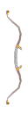

Filters:
Ancient Tartessian Bow
50 - 60 Damage
30% Pierce Ratio
Speed: Very Slow
Difficulty : Normal
90 Frostburn Damage over 3.0 Seconds
+40% Frostburn Damage with +10% Improved Duration
Bonus to All Pets :
60 Frostburn Damage over 3.0 Seconds
+20% Frostburn Damage with +10% Improved Duration
LVL 28, STR 80, DEX 238
Ancient Tartessian Bow
116 - 126 Damage
30% Pierce Ratio
Speed: Very Slow
Difficulty : Epic
180 Frostburn Damage over 3.0 Seconds
+50% Frostburn Damage with +20% Improved Duration
Bonus to All Pets :
90 Frostburn Damage over 3.0 Seconds
+25% Frostburn Damage with +20% Improved Duration
LVL 42, STR 102, DEX 375
Ancient Tartessian Bow
191 - 201 Damage
30% Pierce Ratio
Speed: Very Slow
Difficulty : Legendary
270 Frostburn Damage over 3.0 Seconds
+60% Frostburn Damage with +30% Improved Duration
Bonus to All Pets :
120 Frostburn Damage over 3.0 Seconds
+30% Frostburn Damage with +30% Improved Duration
LVL 52, STR 118, DEX 475
Apollo's Curved Bow
182 - 200 Damage
25% Pierce Ratio
Speed: Very Slow
300 - 360 Burn Damage over 3.0 Seconds
72 Fire Damage
72% Poison Resistance
+45% Health Regeneration
+35% Attack Speed
100% Increase in Projectile Speed
Grants Skill : Sacrificial Blaze (Activated on attack)
Give a brief few seconds of life to a conjured blaze, sending it to violently explode between enemy ranks.
6.0 Second(s) Recharge
50 Energy Cost
Extra Life Time 10 Seconds
4 Summon Limit
Blaze Attributes:
Life Time 10.0 Seconds
2449 Health
1071 Energy
Blaze Abilities:
Detonate
4.0 Meter Radius
200 Damage
200 Burn Damage over 4.0 Seconds
150 Fire Damage
175 Reduced Armor for 3.0 Seconds
50% Chance of Impaired Aim for 3.0 Seconds
Dodge Attacks
99% Chance to Dodge Attacks
99% Chance to Avoid Projectiles
LVL 44, STR 151, DEX 438
Arcane Fury
150 - 172 Damage
25% Pierce Ratio
Speed: Very Slow
Set : Arcane Barrage
+50% Elemental Damages
130 - 140 Elemental Damage
130 - 140 Vitality Damage
7% of Attack damage converted to Health
+50 Intelligence
+2 to Conjured Steal
+2 to all skills in Witchcraft Mastery
LVL 60, STR 160, DEX 483
Artemis' Silver Bow
182 - 210 Damage
30% Pierce Ratio
Speed: Very Slow
+20% Pierce Damage
9.0% Chance of 3.0 second(s) of Stun
+32 Dexterity
+450 Health
+59 Defensive Ability
+15% Attack Speed
+2 to all skills in Archery Mastery
Grants Skill : Split Shots
LVL 47, STR 154, DEX 453
Astrapi
157 - 167 Damage
25% Pierce Ratio
Speed: Very Slow
+20% Lightning Damage
20% Chance of:
171 - 312 Electrical Burn Damage over 3.0 Seconds
1.0 - 2.0 second(s) of Stun
17 - 144 Lightning Damage
80% Lightning Resistance
+25 Strength
+25 Intelligence
+25 Dexterity
+20% Attack Speed
LVL 45, STR 142, DEX 398
Atalanta's Bow
175 - 184 Damage
25% Pierce Ratio
Speed: Very Slow
30.0% Chance of +100% Pierce Damage
22.0% Chance of 420 Bleeding Damage over 3.0 Seconds
96 Cold Damage
25% Pierce Resistance
+38 Dexterity
+49 Defensive Ability
+10% Movement Speed
6% Chance to Dodge Attacks
+100% Damage to Beasts
+2 to all skills in Archery Mastery
LVL 47, STR 151, DEX 438
Avenger's Spleen
150 - 172 Damage
Speed: Very Slow
+15% Physical Damage
+25% Fire Damage
+25% Burn Damage with +50% Improved Duration
70 Fire Damage
10% of Attack damage converted to Health
50% Fire Resistance
+10% Attack Speed
Grants Skill : Gathering Flames
LVL 50, STR 188, DEX 445
Barrage
80 - 97 Damage
25% Pierce Ratio
Speed: Very Slow
+35% Pierce Damage
+18 Dexterity
+36% Attack Speed
20% Increase in Projectile Speed
Grants Skill : Impaling Bones
LVL 29, STR 122, DEX 298
Battlemonger's Bow
22 - 26 Damage
25% Pierce Ratio
Speed: Very Slow
+15% Pierce Damage
6 Piercing Damage
15% Pierce Resistance
+10% Dexterity
+2 to Eagle Eye
LVL 8, STR 65, DEX 130
Bladestring
207 - 225 Damage
25% Pierce Ratio
Speed: Very Slow
+15% Physical Damage
+15% Pierce Damage
+50% Life Leech
49 - 69 Piercing Damage
11% of Attack damage converted to Health
30.0% Chance of 190 Physical Retaliation
+33 Dexterity
+150 Defensive Ability
LVL 51, STR 161, DEX 488
Bolina's Fate
172 - 190 Damage
30% Pierce Ratio
Speed: Very Slow
150 Frostburn Damage over 3.0 Seconds
150 Electrical Burn Damage over 3.0 Seconds
+15% Health
+5.0 Energy Regeneration per second
+40% Energy Regeneration
+32% Attack Speed
+15% Movement Speed
13% Chance to Avoid Projectiles
33% Weapon Base Damage becomes Elemental
+2 to all skills in Time Mastery
Grants Skill : Radiant Orb (Activated on low health)
Creates a veil of light that absorbs a certain quantity of physical damage until it breaks.
40.0 Second(s) Recharge
2136 Damage Absorption
Protects Against :
Physical
+50% Health Regeneration
LVL 49, STR 154, DEX 460
Bone Bow
66 - 75 Damage
25% Pierce Ratio
Speed: Very Slow
Difficulty : Normal
120 Life Leech over 3.0 Seconds
120 Energy Leech over 3.0 Seconds
LVL 34, STR 85, DEX 269
Bone Bow
140 - 149 Damage
25% Pierce Ratio
Speed: Very Slow
Difficulty : Epic
180 Life Leech over 3.0 Seconds
180 Energy Leech over 3.0 Seconds
LVL 46, STR 107, DEX 406
Bone Bow
216 - 225 Damage
25% Pierce Ratio
Speed: Very Slow
Difficulty : Legendary
240 Life Leech over 3.0 Seconds
240 Energy Leech over 3.0 Seconds
LVL 56, STR 126, DEX 525
Borealis
145 - 165 Damage
25% Pierce Ratio
Speed: Very Slow
+44% Lightning Damage
30% Chance of:
81 - 339 Electrical Burn over 3.0 Seconds
+50% Lightning Damage
27 - 30 Lightning Damage
5.0% Chance of 3.0 second(s) of Stun
28% Cold Resistance
32% Lightning Resistance
+24 Intelligence
+24 Dexterity
+44 Defensive Ability
Grants Skill : Lightning Bolt (Activated on attack)
Calls down a powerful bolt of lightning from the heavens to decimate your target.
6.0 Second(s) Recharge
128 Energy Cost
1.1 Meter Radius
120 - 247 Lightning Damage
1.0 second(s) of Stun
LVL 42, STR 136, DEX 368
Bow of Artio
141 - 151 Damage
25% Pierce Ratio
Speed: Very Slow
+0% Bleeding Damage with +25% Improved Duration
+50 Dexterity
-15% Recharge
+20% Less Damage from Beasts
+1 to all skills in Time Mastery
+1 to all skills in Archery Mastery
Bonus to All Pets :
+20% Total Damage
20% of Attack damage converted to Health
LVL 54, STR 110, DEX 425
Bow of Eurytus
175 - 184 Damage
25% Pierce Ratio
Speed: Very Slow
+20% Physical Damage
15% Chance to Fumble attacks for 2.0 Seconds
15% Chance of Impaired Aim for 2.0 Seconds
100% Skill Disruption Protection
+38 Dexterity
35% Increase in Projectile Speed
+2 to Acute Precision
+2 to Hunting Net
+1 to all skills in Necromancy Mastery
Grants Skill : Bone Cage
LVL 46, STR 151, DEX 438
Bow of Herakles
182 - 210 Damage
25% Pierce Ratio
Speed: Very Slow
15.0% Chance of +300% Physical Damage
+40% Pierce Damage
183 - 225 Poison Damage over 3.0 Seconds
+40% Poison Damage
65 - 84 Vitality Damage
+29 Strength
+29 Dexterity
+440 Health
+2 to Light Armor Specialist
LVL 49, STR 154, DEX 453
Bow of Sa Djed
94 - 105 Damage
35% Pierce Ratio
Speed: Very Slow
+20% Physical Damage
+20% Pierce Damage
+20% Poison Damage
32% Fire Resistance
32% Poison Resistance
+160 Defensive Ability
6% Chance to Dodge Attacks
+50% Damage to Insectoids
+25% Less Damage from Insectoids
LVL 35, STR 128, DEX 328
Bow of Selene
32 - 35 Damage
25% Pierce Ratio
Speed: Very Slow
25% Chance of +50% Cold Damage
15% Chance of:
99 Frostburn Damage over 3.0 Seconds
+50% Frostburn Damage
2.0 second(s) of Freeze
50% Slowed for 3.0 Seconds
52 - 62 Cold Damage
-30% Fire Resistance
60% Cold Resistance
+2 to Absolute Zero
LVL 30, STR 82, DEX 258
Bow of the Lampades
54 - 71 Damage
25% Pierce Ratio
Speed: Very Slow
+10% Pierce Damage
144 Poison Damage over 3.0 Seconds
+25% Poison Damage with +100% Improved Duration
25 - 40% Slower Movement for 3.0 Seconds
+21 Dexterity
+1.0 Health Regeneration per second
LVL 30, STR 82, DEX 258
Bow of the Nile
38 - 55 Damage
25% Pierce Ratio
Speed: Very Slow
6 - 12 Burn Damage over 3.0 Seconds
4 - 8 Bonus Damage
7 - 12 Fire Damage
11% Fire Resistance
+17 Dexterity
+10% Health Regeneration
25% Increase in Projectile Speed
LVL 18, STR 69, DEX 174
Bow of the Nymph
67 - 76 Damage
25% Pierce Ratio
Speed: Very Slow
37 Piercing Damage
2 - 8% Reduction to Enemy's Health
50% Poison Resistance
+5.0 Health Regeneration per second
+10% Total Speed
+30% Attack Speed
6% Chance to Dodge Attacks
6% Chance to Avoid Projectiles
+3 to Gift of Life
+1 to all skills in Lifegiving Mastery
Grants Skill : Nature's Wrath (Activated on attack)
Imbue your shots with the power of the elements.
1 Projectile(s)
1.5 Meter Radius
33% Chance to pass through Enemies
60 - 99 Elemental Damage
Bonus to All Pets :
10% Elemental Resistance
10% Vitality Damage Resistance
LVL 42, STR 87, DEX 281
Bow of the Shades
140 - 160 Damage
25% Pierce Ratio
Speed: Very Slow
90 Life Leech over 3.0 Seconds
+25% Life Leech
32 - 52 Cold Damage
10% Reduction to Enemy's Health
111 Vitality Damage
30% Cold Resistance
40% Increase in Projectile Speed
+2 to Early Grave
+2 to Necromania
Grants Skill : Death Ward
Bonus to All Pets :
30 Cold Damage
30 Vitality Damage
LVL 44, STR 143, DEX 403
Bramblewood Bow
50 - 60 Damage
25% Pierce Ratio
Speed: Very Slow
Difficulty : Normal
25.0% Chance of 30 Reduced Resistances for 3.0 Seconds
+10% Attack Speed
LVL 28, STR 79, DEX 239
Bramblewood Bow
116 - 126 Damage
25% Pierce Ratio
Speed: Very Slow
Difficulty : Epic
25.0% Chance of 40 Reduced Resistances for 3.0 Seconds
+15% Attack Speed
LVL 42, STR 136, DEX 368
Bramblewood Bow
191 - 201 Damage
25% Pierce Ratio
Speed: Very Slow
Difficulty : Legendary
25.0% Chance of 50 Reduced Resistances for 3.0 Seconds
+20% Attack Speed
LVL 52, STR 157, DEX 468
Brigand's Bow
15 - 26 Damage
33% Pierce Ratio
Speed: Very Slow
Difficulty : Normal
21 - 27 Poison Damage over 3.0 Seconds
+8 Dexterity
+20% Attack Speed
LVL 8, STR 53, DEX 70
Brigand's Bow
76 - 87 Damage
33% Pierce Ratio
Speed: Very Slow
Difficulty : Epic
90 - 114 Poison Damage over 3.0 Seconds
+22 Dexterity
+30% Attack Speed
LVL 34, STR 120, DEX 288
Brigand's Bow
173 - 184 Damage
33% Pierce Ratio
Speed: Very Slow
Difficulty : Legendary
192 - 225 Poison Damage over 3.0 Seconds
+36 Dexterity
+40% Attack Speed
LVL 46, STR 146, DEX 413
Bristlemouth
134 - 146 Damage
25% Pierce Ratio
Speed: Very Slow
+30% Physical Damage
+30% Bleeding Damage
10.0% Chance of 100% Physical Resistance
10.0% Chance of 100% Reduction in Bleeding Duration
+10% Strength
+100 Defensive Ability
+1 to all skills in Barbarism Mastery
Grants Skill : Thunder Strike
LVL 41, STR 380, DEX 100
Burning Feather
152 - 172 Damage
30% Pierce Ratio
Speed: Very Slow
20.0% Chance of +150% Bleeding Damage
150 Burn Damage over 3.0 Seconds
+50% Burn Damage with +40% Improved Duration
70 Fire Damage
8% of Attack damage converted to Health
80% Fire Resistance
+20% Attack Speed
+2 to Dragon Arrow
+2 to Magical Winds
+1 to all skills in Archery Mastery
LVL 48, STR 135, DEX 363
Chillwind
23 - 40 Damage
25% Pierce Ratio
Speed: Very Slow
+20% Physical Damage
+20% Cold Damage
+20% Frostburn Damage
4 - 12 Cold Damage
10 - 35% Slower Movement for 3.0 Seconds
11% Cold Resistance
LVL 11, STR 61, DEX 122
Chitinous Bow
74 - 84 Damage
33% Pierce Ratio
Speed: Very Slow
+25% Physical Damage
+25% Pierce Damage
20.0% Chance of 90 - 150 Bleeding Damage over 3.0 Seconds
44 Piercing Damage
20 - 120 Reduced Armor for 3.0 Seconds
50% Increase in Projectile Speed
+50% Damage to Insectoids
LVL 41, STR 86, DEX 275
Chthonian Needler
198 - 208 Damage
25% Pierce Ratio
Speed: Very Slow
135 - 255 Bleeding Damage over 3.0 Seconds
+30% Bleeding Damage with +66% Improved Duration
180 Reduced Armor for 3.0 Seconds
+42 Strength
+42 Dexterity
+465 Health
+30% Attack Speed
75% Increase in Projectile Speed
+3 to Headshot
LVL 52, STR 161, DEX 488
Coral Warp-Bow
165 - 174 Damage
33% Pierce Ratio
Speed: Very Slow
120 - 240 Poison Damage over 3.0 Seconds
25% Chance of:
198 Life Leech over 3.0 Seconds
20% Reduction to Enemy's Health
90 - 120 Cold Damage
36 Instant Poison Damage
30% reduced Offensive Ability for 3.0 Seconds
22% Reduced Resistances for 3.0 Seconds
40% Poison Resistance
40% Reduced Freeze Duration
+40 Intelligence
+20% Attack Speed
+20% Casting Speed
LVL 54, STR 163, DEX 498
Corpse Desecrator
202 - 212 Damage
25% Pierce Ratio
Speed: Very Slow
+26% Pierce Damage
270 Burn Damage over 4.0 Seconds
+26% Burn Damage
+26% Vitality Damage
110 Vitality Damage
+30% Casting Speed
60% Increase in Projectile Speed
+40% Damage to Undead
+150 Damage to Undead
+2 to Eradicate
+1 to all skills in Chaos Mastery
LVL 60, STR 128, DEX 528
Cupid's Bow
46 - 63 Damage
25% Pierce Ratio
Speed: Very Slow
6 - 13 Bonus Damage
26 Vitality Damage
10 Reduced Resistances for 3.0 Seconds
10.0% Chance of 8.0 - 11.0 second(s) of Mind Control
+17 Dexterity
+50% Health Regeneration
+32 Energy
+50% Energy Regeneration
LVL 26, STR 77, DEX 226
Cursedwood Bow
86 - 95 Damage
33% Pierce Ratio
Speed: Very Slow
+20% Burn Damage
+20% Electrical Burn Damage
+20% Vitality Decay
20 Fire Damage
20 Lightning Damage
20 Vitality Damage
+10 Intelligence
+10 Dexterity
+5.0 Energy Regeneration per second
15% Weapon Base Damage becomes Elemental
25% Increase in Projectile Speed
Grants Skill : Curse Wounds (Activated on attack)
Curse the wounds of your enemies to prevent them from recovering.
18.0 Second(s) Recharge
50 Energy Cost
8.0 Second Duration
-15% Total Speed
-15% Bleeding Resistance
-15% Elemental Resistance
-15% Vitality Damage Resistance
LVL 42, STR 89, DEX 294
Daedalus' Dread
101 - 111 Damage
25% Pierce Ratio
Speed: Very Slow
90 Burn Damage over 3.0 Seconds
90 Frostburn Damage over 3.0 Seconds
32% Fire Resistance
32% Cold Resistance
32% Energy Leech Resistance
+22 Intelligence
+22 Dexterity
+200 Health
+150 Energy
+12% Total Speed
LVL 40, STR 130, DEX 338
Deathblossom
145 - 165 Damage
25% Pierce Ratio
Speed: Very Slow
10.0% Chance of +125% Pierce Damage
10.0% Chance of 126 Bleeding Damage over 3.0 Seconds
+200% Bleeding Damage with +50% Improved Duration
+35% Life Leech
11% of Attack damage converted to Health
30% Bleeding Resistance
30% Vitality Damage Resistance
30% Life Leech Resistance
+20% Health Regeneration
+20% Energy Regeneration
-18% Recharge
-18% Energy Cost
+3 to Black Widow
LVL 43, STR 136, DEX 368
Doomfang's Striker
50 - 60 Damage
25% Pierce Ratio
Speed: Very Slow
Difficulty : Normal
12 Reduced Resistances for 10.0 Seconds
+2.0 ENergy Regeneration per second
-6% Recharge
+1 to all skills in Time Mastery
Grants Skill : Hourglass of Waning
LVL 28, STR 80, DEX 238
Doomfang's Striker
116 - 126 Damage
25% Pierce Ratio
Speed: Very Slow
Difficulty : Epic
14 Reduced Resistances for 10.0 Seconds
+4.0 ENergy Regeneration per second
-8% Recharge
+1 to all skills in Time Mastery
Grants Skill : Hourglass of Waning
LVL 42, STR 104, DEX 388
Doomfang's Striker
191 - 201 Damage
25% Pierce Ratio
Speed: Very Slow
Difficulty : Legendary
16 Reduced Resistances for 10.0 Seconds
+6.0 ENergy Regeneration per second
-10% Recharge
+2 to all skills in Time Mastery
Grants Skill : Hourglass of Waning
LVL 52, STR 120, DEX 488
Dreadwind
87 - 108 Damage
25% Pierce Ratio
Speed: Very Slow
40 - 70 Life Leech over 2.0 Seconds
40 - 70 Vitality Damage
1.0 - 1.5 second(s) of Confusion
+18 Dexterity
+20% Attack Speed
50% Increase in Projectile Speed
+2 to Languid Death
+1 to all skills in Necromancy Mastery
Grants Skill : Banishing Spell (Activated upon taking damage)
This surge of shadow energy effectively defeats the living and the dead alike.
Cooldown is reduced with more skill points.
3.9 Second(s) Recharge
34 Energy Cost
12 Piercing Damage
8 Cold Damage
55 Vitality Damage
26% of Attack damage converted to Health
+40% Damage to Undead
LVL 34, STR 125, DEX 313
Earth Arrow
180 - 200 Damage
Speed: Very Slow
33.0% Chance of +40% Physical Damage
+15% Pierce Damage
10% of Attack damage converted to Health
15.0% Chance of 50% Physical Resistance
+500 Health
8% Chance to Dodge Attacks
+2 to Devastating Shots
+2 to Stoneskin
+1 to all skills in Archery Mastery
+1 to all skills in Geomancy Mastery
Grants Skill : Seismic Fury
LVL 62, STR 154, DEX 453
Eldritch's Bow
25 - 40 Damage
25% Pierce Ratio
Speed: Slow
Difficulty : Normal
6% of Attack damage converted to Health
50% Increase in Projectile Speed
+1 to all skills in Archery Mastery
LVL 14, STR 65, DEX 148
Eldritch's Bow
87 - 109 Damage
25% Pierce Ratio
Speed: Slow
Difficulty : Epic
12% of Attack damage converted to Health
70% Increase in Projectile Speed
+1 to all skills in Archery Mastery
LVL 37, STR 124, DEX 308
Eldritch's Bow
178 - 189 Damage
25% Pierce Ratio
Speed: Slow
Difficulty : Legendary
18% of Attack damage converted to Health
100% Increase in Projectile Speed
+2 to all skills in Archery Mastery
LVL 48, STR 149, DEX 428
Emperor's Gift
112 - 130 Damage
25% Pierce Ratio
Speed: Very Slow
+20% Physical Damage
11% Pierce Resistance
11% Elemental Resistance
11% Poison Resistance
50% Slowed Attack Retaliation for 2.0 Seconds
+150 Health
+45% Health Regeneration
+150 Energy
+150 Defensive Ability
LVL 39, STR 132, DEX 348
Flayer of Souls
43 - 52 Damage
25% Pierce Ratio
Speed: Very Slow
Difficulty : Normal
25 Vitality Damage
25 Vitality Retaliation
+30% Damage to Ghosts
+30% Damage to Undead
LVL 28, STR 79, DEX 239
Flayer of Souls
105 - 114 Damage
25% Pierce Ratio
Speed: Very Slow
Difficulty : Epic
50 Vitality Damage
50 Vitality Retaliation
+40% Damage to Ghosts
+40% Damage to Undead
LVL 42, STR 136, DEX 368
Flayer of Souls
167 - 176 Damage
25% Pierce Ratio
Speed: Very Slow
Difficulty : Legendary
100 Vitality Damage
100 Vitality Retaliation
+50% Damage to Ghosts
+50% Damage to Undead
LVL 52, STR 157, DEX 468
Froststorm
87 - 108 Damage
25% Pierce Ratio
Speed: Very Slow
18.0% Chance of 30 - 180 Frostburn Damage over 3.0 Seconds
25 - 35 Cold Damage
18.0% Chance of 10 - 60 Lightning Damage
5.0% Chance of 3.0 second(s) of Freeze
30% Slower Movement for 3.0 Seconds
20% Elemental Resistance
30% Cold Resistance
+2 to Flash Freeze
+1 to all skills in Aqua Mastery
LVL 35, STR 125, DEX 313
Gusir's Gifts
219 - 229 Damage
25% Pierce Ratio
Speed: Very Slow
+25% Pierce Damage
25.0% Chance of 300 - 330 Bleeding Damage over 3.0 Seconds
+50% Bleeding Damage with +25% Improved Duration
55 Piercing Damage
+20% Attack Speed
10% Chance to Dodge Attacks
10% Chance to Avoid Projectiles
50% Increase in Projectile Speed
LVL 64, STR 126, DEX 525
Helios' Fury
182 - 200 Damage
25% Pierce Ratio
Speed: Very Slow
+15% Physical Damage
15.0% Chance of +200% Fire Damage
15.0% Chance of +200% Burn Damage
40 Fire Damage
12% Physical Resistance
100% Fire Resistance
+15% Energy
+60% Casting Speed
-15% Energy Cost
Grants Skill : Ring of Flame (Activated when equipped)
Encircles you in a searing ring of flames burning all enemies that come within its radius.
4.0 Second(s) Recharge
3.1 Meter Radius
50 Fire Damage
LVL 46, STR 151, DEX 438
Himingbjorg Bow
73 - 83 Damage
25% Pierce Ratio
Speed: Very Slow
+12% Total Damage
20% Chance of:
50% Chance to Fumble attacks for 3.0 Seconds
75% Chance of Impaired Aim for 3.0 Seconds
1.0 second(s) of Confusion
25 - 35 Fire Damage
+160 Defensive Ability
+25% Attack Speed
+40% Damage to Giants
+3 to Boulder Toss
+2 to all skills in Geomancy Mastery
LVL 43, STR 87, DEX 281
Horns of Cyprus
27 - 35 Damage
25% Pierce Ratio
Speed: Very Slow
+20% Physical Damage
10% Pierce Resistance
10% Elemental Resistance
10% Poison Resistance
+11 Strength
+40 Defensive Ability
LVL 14, STR 65, DEX 148
Hunter-Seeker
168 - 176 Damage
33% Pierce Ratio
Speed: Very Slow
+25% Pierce Damage
150 Frostburn Damage over 2.0 Seconds
40 Piercing Damage
40 Cold Damage
+25% Casting Speed
10% Chance to Dodge Attacks
10% Chance to Avoid Projectiles
+3 to Magical Winds
+3 to Intense Frost
Grants Skill : Eye of the Storm
Bonus to All Pets :
-15% Recharge
LVL 59, STR 150, DEX 433
Hyksos Compound Bow
78 - 87 Damage
50% Pierce Ratio
Speed: Very Slow
+30% Pierce Damage
33.0% Chance of 150 Bleeding Damage over 3.0 Seconds
+40% Bleeding Damage
+10% Attack Speed
50% Increase in Projectile Speed
+2 to Ominous Arrows
LVL 31, STR 122, DEX 298
Iaculus
66 - 73 Damage
25% Pierce Ratio
Speed: Average
96 - 144 Poison Damage over 3.0 Seconds
+28% Instant Poison Damage
+28% Poison Damage
66 - 73 Instant Poison Damage
30% Slower Movement for 3.0 Seconds
+2 to Target Practice
LVL 32, STR 122, DEX 298
Ichaival
218 - 227 Damage
25% Pierce Ratio
Speed: Very Slow
+15% Total Damage
120 - 160 Fire Damage
20 - 200 Lightning Damage
+50 Intelligence
+200 Energy
+20% Attack Speed
+2 to all skills in Witchcraft Mastery
LVL 63, STR 128, DEX 538
Ichthian Stinger
66 - 75 Damage
33% Pierce Ratio
Speed: Very Slow
Difficulty : Normal
20.0% Chance of +200% increased Pierce Ratio
LVL 34, STR 85, DEX 269
Ichthian Stinger
140 - 149 Damage
33% Pierce Ratio
Speed: Very Slow
Difficulty : Epic
20.0% Chance of +200% increased Pierce Ratio
LVL 46, STR 107, DEX 406
Ichthian Stinger
216 - 225 Damage
33% Pierce Ratio
Speed: Very Slow
Difficulty : Legendary
20.0% Chance of +200% increased Pierce Ratio
LVL 56, STR 126, DEX 525
Jade Bow
48 - 58 Damage
35% Pierce Ratio
Speed: Very Slow
Set : Pride of the Jade Palace
102 - 126 Poison Damage over 3.0 Seconds
15% Elemental Resistance
+17 Dexterity
LVL 24, STR 77, DEX 226
Jeweled Bow
96 - 116 Damage
25% Pierce Ratio
Speed: Very Slow
+25% Stun Duration
33 - 63 Vitality Damage
16% Energy Drain (80% of lost Energy as Damage)
15.0% Chance of 1.0 - 2.0 second(s) of Stun
+100% Damage to Magical
Grants Skill : War Horn (Activated upon taking melee damage)
The triumphant call of your war horn temporarily stuns enemies.
18.0 Second(s) Recharge
56 Energy Cost
8.8 Meter Radius
1.5 - 3.9 second(s) of Stun
LVL 33, STR 128, DEX 328
Khamsin
140 - 152 Damage
25% Pierce Ratio
Speed: Very Slow
20% Chance of:
80 - 115 Elemental Damage
50% Slower Movement for 6.0 Seconds
20.0% Chance of 2.0 - 6.0 second(s) of Confusion
50% Elemental Resistance
+40 Dexterity
+405 Health
+100% Health Regeneration
+100% Energy Regeneration
LVL 40, STR 136, DEX 368
Lawbreaker
135 - 136 Damage
25% Pierce Ratio
Speed: Very Slow
+15% Total Damage
120 Burn Damage over 3.0 Seconds
+40% Burn Damage
40% Slower attack for 3.0 Seconds
+25 Strength
+20 Dexterity
+300 Health
+10% Total Speed
12% Chance to Avoid Projectiles
+2 to Target Practice
+2 to Painkiller
LVL 38, STR 125, DEX 313
Medjay Bpw
94 - 105 Damage
25% Pierce Ratio
Speed: Very Slow
18 - 24 Piercing Damage
35% Pierce Resistance
35% Fire Resistance
+50 Dexterity
+42 Defensive Ability
+25% Damage to Beastmen
+25% Damage to Beasts
Grants Skill : Split Shots
LVL 34, STR 128, DEX 328
Meerkwood Bow
162 - 182 Damage
30% Pierce Ratio
Speed: Very Slow
+15% Pierce Damage
+45% Life Leech
9% of Attack damage converted to Health
+32 Dexterity
+80 Defensive Ability
+30% Attack Speed
50% Increase in Projectile Speed
Grants Skill : Briar Ward
LVL 42, STR 142, DEX 398
Meriones' Bpw
109 - 118 Damage
25% Pierce Ratio
Speed: Very Slow
28 Piercing Damage
20% Reduced Resistances for 3.0 Seconds
31% Pierce Resistance
+33 Dexterity
+272 Health
+15% Attack Speed
+25% Damage to Demons
+2 to Monster Hunter
+2 to all skills in Archery Mastery
LVL 38, STR 132, DEX 348
Metal Punch
20 - 30 Damage
25% Pierce Ratio
Speed: Very Slow
+25% Physical Damage
+30% Pierce Damage
18 Reduced Armor for 3.0 Seconds
+60 Health
+2 to Headshot
+2 to Silver Feathers
LVL 7, STR 57, DEX 96
Michanismos
190 - 214 Damage
20% Pierce Ratio
Speed: Very Slow
+50% Physical Damage
+15% Strength
+150 Defensive Ability
-15% Attack Speed
-15% Recharge
+150 Damage to Undead
+150 Damage to Demons
+1 to all skills in Barbarism Mastery
Grants Skill : Distortion Wave (Activated on attack)
A wave of force is projected outward that forms chaotic ripples in the fabric of reality and delivers devastating damage to the body and mind of enemies.
10.0 Second(s) Recharge
96 Energy Cost
259 Damage
60% Slowed for 4.0 Seconds
LVL 47, STR 500, DEX 120
Nemesis' Recurve
182 - 200 Damage
25% Pierce Ratio
Speed: Very Slow
+20% Pierce Damage
+20% Vitality Damage
15% Chance of:
110 - 164 Bleeding Damage per Second
1.0 - 2.0 second(s) of Stun
70 - 108 Vitality Damage
16.0% Chance of 50% Health Reduction Retaliation
+35 Strength
+35 Dexterity
+450 Health
+1 to all skills in Chaos Mastery
+1 to all skills in Necromancy Mastery
LVL 48, STR 151, DEX 438
Neith's Bow of the Sun
140 - 152 Damage
25% Pierce Ratio
Speed: Very Slow
+50% Burn Damage with +50% Improved Duration
50 Fire Damage
44% Fire Resistance
44% Poison Resistance
+50% Health Regeneration
10% less Energy Reserved
+20% Attack Speed
+1 to all skills in Archery Mastery
+1 to all skills in Witchcraft Mastery
Grants Skill : Sunlight (Activated upon taking melee damage)
Bring forth intense sunlight that burns anything standing in its area of effect.
7.0 Second(s) Recharge
7.0 Second Duration
2.5 Meter Radius
240 Burn Damage per Second
LVL 42, STR 136, DEX 368
Nidbow
239 - 249 Damage
25% Pierce Ratio
Speed: Very Slow
+15% Total Damage
120 - 240 Life Leech over 3.0 Seconds
120 - 240 Energy Leech over 3.0 Seconds
100 Vitality Damage
20% Reduced Resistances for 3.0 Seconds
20% Health Reduction Retaliation
30% Slowed Attack Retaliation for 3.0 Seconds
+1 to all skills in Necromancy Mastery
Grants Skill : Power Strike (Activated on attack)
Necrotic power falls down from the sky, spreading upon touching the ground and draining enemies' life forces to replenish your own.
1.0 Second(s) Recharge
60 Energy Cost
1.0 Meter Radius
200 Vitality Decay over 3.0 Seconds
100 Cold Damage
140 Vitality Damage
100% of Attack damage converted to Health
LVL 62, STR 126, DEX 525
Niflheim's Aspect
126 - 145 Damage
25% Pierce Ratio
Speed: Very Slow
250 - 300 Burn Damage over 3.0 Seconds
+40% Burn Damage
250 - 300 Vitality Decay over 3.0 Seconds
+40% Vitality Decay
40% Fire Resistance
40% Vitality Damage Resistance
40% Life Leech Resistance
40% Reduced Freeze Duration
+15% Total Speed
Grants Skill : Restless Volley
LVL 70, STR 132, DEX 560
Nomad's Hunting Bow
39 - 40 Damage
25% Pierce Ratio
Speed: Very Slow
15.0% Chance of 20 - 30 Vitality Damage
8% of Attack damage converted to Health
+65 Health
+65 Energy
+10% Total Speed
30% Increase in Projectile Speed
LVL 18, STR 69, DEX 174
Ordu Composite Bow
162 - 182 Damage
25% Pierce Ratio
Speed: Very Slow
Set : The Ordu
35 Reduced Armor for 3.0 Seconds
+25 Dexterity
+15% Attack Speed
25% Increase in Projectile Speed
Grants Skill : Volley
LVL 39, STR 142, DEX 398
Painweaver
164 - 174 Damage
25% Pierce Ratio
Speed: Slow
9.0% Chance of +300% Physical Damage
9.0% Chance of +300% Pierce Damage
29 - 45 Piercing Damage
80% reduced Defensive Ability for 3.0 Seconds
55% Bleeding Resistance
55% Life Leech Resistance
50% Increase in Projectile Speed
LVL 48, STR 151, DEX 438
Philip's Reach
190 - 214 Damage
30% Pierce Ratio
Speed: Very Slow
Set : Philip's Legacy
+10% Elemental Damages
40 - 60 Burn Damage per Second
20 - 30 Piercing Damage
40 - 60 Elemental Damage
+10% Health
+10% Energy
-10% Reduction to all Requirements
+4 to Crystal Balls
+4 to Magical Winds
Grants Skill : Crystal Balls (Activated on attack)
Sends a wave of crystalline projectiles, imbued with elemental magic which damages enemies on contact.
8.0 Second(s) Recharge
81 Energy Cost
5 Projectile(s)
0.5 Meter Radius
105 Burn Damage over 3.0 Seconds
72 Elemental Damage
72 Fire Damage
LVL 50, STR 158, DEX 473
Polyhedron

59 - 65 Damage
25% Pierce Ratio
Speed: Very Slow
+30% Physical Damage
20.0% Chance of +200% Pierce Damage
+15% Strength
+80 Defensive Ability
-10% Attack Speed
+1 to all skills in Geomancy Mastery
Grants Skill : Calculated Strike
LVL 29, STR 260, DEX 80
Prey Snatcher
39 - 56 Damage
50% Pierce Ratio
Speed: Very Slow
+20% Pierce Damage
+5% Total Damage
4 Piercing Damage
+10% Movement Speed
+1 to Intimidating Screech
+1 to Languid Death
Grants Skill : Ensnare
LVL 18, STR 69, DEX 174
Pyromancer's Bow
76 - 87 Damage
25% Pierce Ratio
Speed: Very Slow
Difficulty : Epic
+15% Elemental Damages
54 - 82 Burn Damage per Second
45 Fire Damage
Grants Skill : Flamestrike (Activated on attack)
Call an endless rain of fire to burn down your enemies.
1.0 Second(s) Recharge
1.0 Meter Radius
75 - 81 Burn Damage per Second
33 - 44 Fire Damage
LVL 40, STR 128, DEX 364
Pyromancer's Bow
173 - 184 Damage
25% Pierce Ratio
Speed: Very Slow
Difficulty : Legendary
+20% Elemental Damages
100 - 128 Burn Damage per Second
80 Fire Damage
Grants Skill : Flamestrike (Activated on attack)
Call an endless rain of fire to burn down your enemies.
1.0 Second(s) Recharge
1.0 Meter Radius
100 - 106 Burn Damage per Second
41 - 56 Fire Damage
LVL 52, STR 146, DEX 460
Qin Warbow
175 - 184 Damage
25% Pierce Ratio
Speed: Very Slow
+40% Physical Damage
10% Physical Resistance
+50 Strength
+480 Health
+215 Defensive Ability
50% Increase in Projectile Speed
+70% Damage to Constructs
+2 to all skills in Geomancy Mastery
LVL 45, STR 151, DEX 438
Ram Bow
18 - 35 Damage
25% Pierce Ratio
Speed: Very Slow
+30% Physical Damage
+8 Dexterity
+16 Defensive Ability
+10% Attack Speed
+2 to Split Shots
LVL 7, STR 57, DEX 96
Reefguard's Projector
50 - 60 Damage
25% Pierce Ratio
Speed: Very Slow
Difficulty : Normal
+10% Elemental Damages
+10% Instant Poison Damage
+10% Poison Damage
+20% Less Damage from Plants
+20% Less Damage from Insectoids
+1 to all skills in Science Mastery
LVL 28, STR 80, DEX 238
Reefguard's Projector
116 - 126 Damage
25% Pierce Ratio
Speed: Very Slow
Difficulty : Epic
+15% Elemental Damages
+15% Instant Poison Damage
+15% Poison Damage
+20% Less Damage from Plants
+20% Less Damage from Insectoids
+2 to all skills in Science Mastery
LVL 42, STR 104, DEX 388
Reefguard's Projector
191 - 201 Damage
25% Pierce Ratio
Speed: Very Slow
Difficulty : Legendary
+20% Elemental Damages
+20% Instant Poison Damage
+20% Poison Damage
+20% Less Damage from Plants
+20% Less Damage from Insectoids
+3 to all skills in Science Mastery
LVL 52, STR 120, DEX 488
Sandstorm Sniper
191 - 201 Damage
40% Pierce Ratio
Speed: Slow
+50% Pierce Damage
30% Chance for one of the following:
44% Chance of Fumble attacks for 3.0 Seconds
44% Chance of Impaired Aim for 3.0 Seconds
50% Pierce Resistance
50% Sleep Resistance
50% Stun Resistance
50% Reduced Entrapment Duration
+50 Dexterity
+25% Attack Speed
200% Increase in Projectile Speed
+4 to Eagle Eye
+4 to Headshot
Grants Skill : Sandstorm (Activated on attack)
The incredibly fast projectiles fired from the bow send forth gusts of dust and debris, piercing through ranks of disoriented enemies.
8.0 Second(s) Recharge
180 Piercing Damage
44% Chance of Fumble attacks for 3.0 Seconds
44% Chance of Impaired Aim for 3.0 Seconds
1.0 - 3.0 second(s) of Confusion
LVL 64, STR 164, DEX 503
Scythian Touch
36 - 44 Damage
25% Pierce Ratio
Speed: Very Slow
30% Chance of:
45 Reduced Armor for 5.0 Seconds
30% Slower Movement for 5.0 Seconds
25% Cold Resistancee
+19 Dexterity
+24 Defensive Ability
+32% Attack Speed
+15% Movement Speed
LVL 22, STR 73, DEX 200
Serpent Whisper
140 - 148 Damage
25% Pierce Ratio
Speed: Average
240 - 360 Poison Damage over 3.0 Seconds
+50% Instant Poison Damage
+50% Poison Damage
50 Piercing Damage
66 Instant Poison Damage
7.0% Chance of 5.0 - 7.0 second(s) of Mind Control
44% Pierce Resistance
44% Poison Resistance
5% Chance to Dodge Attacks
LVL 47, STR 151, DEX 438
Shadowrath
54 - 71 Damage
25% Pierce Ratio
Speed: Very Slow
+20% Pierce Damage
8% of Attack damage converted to Health
+16 Strength
+16 Intelligence
+22 Dexterity
+180 Health
+3.0 Energy Regeneration per second
+50 Damage to Undead
+1 to all skills in Necromancy Mastery
Grants Skill : Spirit Ward (Activated when equipped)
Casts a protective ward that will reduce the damage of undead attacks on the player and nearby allies.
1 Active Energy Cost per Second
8.0 Meter Radius
+45 Damage to Undead
+28% Less Damage from Undead
LVL 31, STR 82, DEX 258
Shark Spine
203 - 229 Damage
25% Pierce Ratio
Speed: Very Slow
+30% Pierce Damage
150 - 450 Bleeding Damage over 3.0 Seconds
180 Life Leech over 3.0 Seconds
15% Chance of:
30 Reduced Physical Damage for 3.0 Seconds
30% Slowed for 3.0 Seconds
100 - 130 Vitality Damage
+20% Movement Speed
+75% Damage to Undead
+2 to Early Grave
+1 to all skills in Necromancy Mastery
Grants Skill : Soul Vortex
LVL 50, STR 158, DEX 473
Shredwind
54 - 64 Damage
25% Pierce Ratio
Speed: Very Slow
69 Bleeding Damage over 3.0 Seconds
+50% Bleeding Damage with +50% Improved Duration
60 Reduced Armor for 3.0 Seconds
+25% Attack Speed
25% Increase in Projectile Speed
LVL 29, STR 82, DEX 258
Silentflight

47 - 56 Damage
25% Pierce Ratio
Speed: Very Slow
+25% Pierce Damage
5.0% Chance of +120% Total Damage
+25% Poison Damage
+10% Movement Speed
10% Chance to Dodge Attacks
+1 to all skills in Archery Mastery
+1 to all skills in Science Mastery
LVL 26, STR 77, DEX 226
Sorrow's Song
50 - 67 Damage
30% Pierce Ratio
Speed: Very Slow
60 Vitality Decay over 3.0 Seconds
20 Cold Damage
18% Reduced Resistances for 3.0 Seconds
20% Cold Resistance
20% Vitality Damage Resistance
+10 Intelligence
+30 Defensive Ability
Grants Skill : Enfeeble (Activated on attack)
Weakening the resolve of your enemies makes them lose all will to fight.
15.0 Second(s) Recharge
40 Energy Cost
6.0 Second Duration
6.0 Meter Radius
-25% Offensive Ability
-25% Attack Speed
LVL 27, STR 78, DEX 232
Spectral Warbow
86 - 97 Damage
25% Pierce Ratio
Speed: Very Slow
84 - 120 Life Leech over 3.0 Seconds
2 - 40 Cold Damage
2 - 26 Vitality Damage
+32 Dexterity
+34% Health Regeneration
+34% Energy Regeneration
Grants Skill : Cold Hand of Death
LVL 33, STR 125, DEX 313
Springvine
59 - 65 Damage
25% Pierce Ratio
Speed: Very Slow
25% Chance of:
+50% Instant Poison Damage
50 Instant Poison Damage
30% Slowed for 3.0 Seconds
7% Reduction to Enemy's Health
60 Instant Poison Retaliation
+10% Health
+16% Total Speed
+20% Less Damage from Plants
+2 to Pure Heart
+2 to Original Creation
LVL 31, STR 81, DEX 252
Storm Strike
25 - 34 Damage
25% Pierce Ratio
Speed: Very Slow
+25% Physical Damage
+20% Lightning Damage
1 - 20 Lightning Damage
11% Lightning Resistance
+12 Dexterity
LVL 10, STR 61, DEX 122
Suanmi
112 - 130 Damage
25% Pierce Ratio
Speed: Very Slow
60 - 144 Burn Damage over 3.0 Seconds
30.0% Chance of +90% Fire Damage
30.0% Chance of +90% Burn Damage
32 - 42 Fire Damage
7.0% Chance of 1.0 - 6.0 second(s) of Confusion
44% Fire Resistance
+50% Health Regeneration
+50% Energy Regeneration
LVL 38, STR 132, DEX 348
Sybaris
198 - 208 Damage
25% Pierce Ratio
Speed: Very Slow
+75% Life Leech
165 - 225 Energy Leech over 3.0 Seconds
30 Reduced Resistances for 3.0 Seconds
+33 Strength
+400 Energy
+2.0 Energy Regeneration per second
+70% Damage to Insectoids
LVL 50, STR 161, DEX 488
Telliam's Will
18 - 35 Damage
50% Pierce Ratio
Speed: Very Slow
+30% Physical Damage
+30% Pierce Damage
+11 Dexterity
+2 to Eagle Eye
LVL 6, STR 57, DEX 96
Tendon Ripper
41 - 59 Damage
25% Pierce Ratio
Speed: Very Slow
+15% Physical Damage
+15% Pierce Damage
20% Chance of:
90 - 270 Bleeding over 3.0 Seconds
50% Slower Movement for 3.0 Seconds
7 - 13 Piercing Damage
LVL 21, STR 73, DEX 200
Teucer's Warbow
131 - 143 Damage
25% Pierce Ratio
Speed: Very Slow
+25% Physical Damage
23 Bonus Damage
5% Physical Resistance
16% Pierce Resistance
16% Bleeding Resistance
16% Elemental Resistance
16% Vitality Damage Resistance
+30% Attack Speed
+1 to Divine Defiance
+1 to all skills in Archery Mastery
LVL 42, STR 136, DEX 368
The Silent One
173 - 192 Damage
20% Pierce Ratio
Speed: Very Slow
351 Electrical Burn Damage over 3.0 Seconds
10.0% Chance of +140% Electrical Burn Damage
240 Poison Damage over 3.0 Seconds
10.0% Chance of 3.0 second(s) of Petrify
45 Instant Poison Damage
14 Reduced Resistances for 3.0 Seconds
15% Slowed for 3.0 Seconds
30% Increase in Projectile Speed
+1 to all skills in Science Mastery
LVL 62, STR 124, DEX 522
The Skyfallen
186 - 200 Damage
25% Pierce Ratio
Speed: Very Slow
+20% Pierce Damage
+34% Cold Damage
+34% Lightning Damage
30 Piercing Damage
48 - 88 Cold Damage
1 - 160 Lightning Damage
7.0% Chance of 1.0 second(s) of Stun
25.0% Chance of 60% Slower Movement for 1.0 Seconds
+6% Intelligence
+6% Energy
+20% Casting Speed
+3 to Ice Blockade
+3 to Magical Winds
Grants Skill : Replenish (Activated on attack)
The magical aspect of the bow will from time to time restore a small amount of your lost energy.
100 Energy Restored
LVL 54, STR 160, DEX 466
Triton's Launcher
50 - 60 Damage
25% Pierce Ratio
Speed: Very Slow
Difficulty : Normal
+10% Frostburn Damage
+10% Electrical Burn Damage
+1 to all skills in Aqua Mastery
Grants Skill : Rising Tide
LVL 28, STR 81, DEX 244
Triton's Launcher
116 - 126 Damage
25% Pierce Ratio
Speed: Very Slow
Difficulty : Epic
+15% Frostburn Damage
+15% Electrical Burn Damage
+1 to all skills in Aqua Mastery
Grants Skill : Rising Tide
LVL 42, STR 105, DEX 394
Triton's Launcher
191 - 201 Damage
25% Pierce Ratio
Speed: Very Slow
Difficulty : Legendary
+25% Frostburn Damage
+25% Electrical Burn Damage
+2 to all skills in Aqua Mastery
Grants Skill : Rising Tide
LVL 52, STR 121, DEX 494
Trueshot Bow

66 - 75 Damage
33% Pierce Ratio
Speed: Very Slow
Difficulty : Normal
+20% Casting Speed
-10% Energy Cost
+25% Damage to Beastmen
+25% Damage to Demons
LVL 34, STR 87, DEX 281
Trueshot Bow
140 - 149 Damage
33% Pierce Ratio
Speed: Very Slow
Difficulty : Epic
+40% Casting Speed
-15% Energy Cost
+30% Damage to Beastmen
+30% Damage to Demons
LVL 46, STR 109, DEX 419
Trueshot Bow
140 - 149 Damage
33% Pierce Ratio
Speed: Very Slow
Difficulty : Legendary
+60% Casting Speed
-20% Energy Cost
+35% Damage to Beastmen
+35% Damage to Demons
LVL 56, STR 128, DEX 538
Turquoise Bow
30 - 40 Damage
25% Pierce Ratio
Speed: Very Slow
+25% Pierce Damage
45 - 63 Poison Damage over 3.0 Seconds
+10% Poison Damage with +50% Improved Duration
15% Poison Resistance
+1 to all skills in Archery Mastery
LVL 14, STR 65, DEX 148
Underworld Stinger
103 - 113 Damage
25% Pierce Ratio
Speed: Very Slow
+30% Vitality Damage
39 Life Leech over 3.0 Seconds
+50% Life Leech
25 - 38 Vitality Damage
+30 Dexterity
20% Increase in Projectile Speed
+3 to Unleashed Fury
+1 to all skills in Chaos Mastery
LVL 36, STR 136, DEX 356
Waywatcher's Caveat
192 - 202 Damage
25% Pierce Ratio
Speed: Very Slow
210 - 300 Poison Damage over 3.0 Seconds
90 - 120 Fire Damage
50 Instant Poison Damage
18.0% Chance of 200% Poison Resistance
240 Poison Retaliation over 4.0 Seconds
+25% Poison Retaliation
+25% Burn Retaliation
+50 Dexterity
+30% Attack Speed
+10% Movement Speed
+1 to all skills in Archery Mastery
+1 to all skills in Lifegiving Mastery
LVL 60, STR 123, DEX 506
Wings of Isis
50 - 70 Damage
Speed: Very Slow
+10% Total Damage
25.0% Chance of +250% Burn Damage with +100% Improved Duration
+200 Energy
-20% Recharge
50% Increase in Projectile Speed
+50% Damage to Magical
+20% Less Damage from Magical
+4 to Elemental Dominion
+4 to Cone of Flames
Grants Skill : Scorch Earth (Activated on attack)
Summon a circle of sacred flames, turning your foes into mere ashes.
5.0 Second Duration
4.0 Meter Radius
110 - 146 Burn Damage per Second
14% reduced Offensive Ability for 1.0 Seconds
LVL 40, STR 1, DEX 380, INT 380
Wrath of Jǫrmungandr
154 - 164 Damage
25% Pierce Ratio
Speed: Very Slow
+30% Cold Damage
+30% Frostburn Damage
420 - 480 Poison Damage over 3.0 Seconds
+30% Poison Damage
5.0% Chance of 1.0 - 3.0 second(s) of Confusion
20% Slowed for 3.0 Seconds
40% Cold Resistance
40% Poison Resistance
105 - 120 Frostburn Retaliation over 4.0 Seconds
+30% Frostburn Retaliation
210 - 240 Poison Retaliation over 4.0 Seconds
+30% Poison Retaliation
+1 to all skills in Aqua Mastery
+1 to all skills in Poison Mastery
LVL 51, STR 112, DEX 438
Zhu Rong's Firebow
145 - 165 Damage
25% Pierce Ratio
Speed: Very Slow
51 - 63 Burn Damage over 3.0 Seconds
+25% Fire Damage
+25% Burn Damage
40 - 52 Fire Damage
42% Fire Resistance
+15 Strength
+15 Intelligence
+15 Dexterity
+1 to all skills in Lifegiving Mastery
LVL 41, STR 136, DEX 368